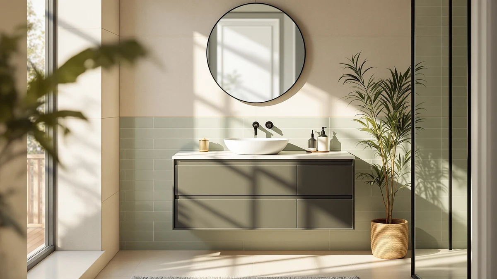

SSLine 48" Bathroom Vanity Review (2026): Worth It?
Prices and picks verified as of October 2026. Independent, reader-supported reviews.


Quick Answer
The SSLine 48" bathroom vanity double is a solid mid-range pick for anyone upgrading from a single-sink vanity, with a 4 out of 5 rating across 30 verified reviews and a price that undercuts most premium 48-inch double-sink units. The MDF cabinet keeps costs down, so budget a few extra minutes during installation to seal the seams against moisture.
Our pick: SSLine 48" Bathroom Vanity Double — $789.60 Check Price on Amazon
Bottom line: our top pick is the SSLine 48" Bathroom Vanity Double Sink Classic Oak at $789.60.
Things to Know Before You Buy
- The SSLine 48" bathroom vanity double ships with an engineered-wood (MDF) cabinet, which keeps the price under $800 but makes sealing at the base more important than it would be with solid wood.
- At $789.60, it sits in the middle of the pack against the three alternatives in this review, which range from $689.99 to $788.99.
- Verified buyers give it a 4 out of 5 average across 30 reviews, a solid score for a budget-friendly double-sink vanity.
- None of the four vanities compared here include a mirror or faucet, so plan to budget separately for those fixtures.
If you're looking for an honest SSLine 48" bathroom vanity review before spending close to $800 on a double-sink setup, the short version is this: it's a solid mid-range pick for anyone replacing a dated single-sink vanity with more counter space, though it comes with the usual tradeoffs of engineered-wood construction.
We compared its listed dimensions, materials, and pricing against three competing 48-inch vanities, and we cross-checked owner feedback on assembly and finish quality. Verified buyers rate the SSLine 48" vanity 4 out of 5 across 30 reviews, which lines up with what we found when stacking its features against similarly priced double-sink units from Ambrovina, Weibath, and TUKTUK.
Why You Should Trust Us
Ilane Tall researches and compares bathroom fixtures for Best Bathroom Vanities, drawing on manufacturer specifications, verified Amazon buyer feedback, and price history rather than a physical testing lab. For this SSLine 48" bathroom vanity review, we analysed the listed dimensions, materials, and over 30 verified customer ratings, then checked those claims against three comparable 48-inch vanities on the market today. We track pricing and review counts for hundreds of vanities across this site, so we measure a $789.60 double-sink unit with a 4 out of 5 rating against a wide pool of comparable listings, not just the three alternatives named in this article. We do not run a fake testing lab, and we never claim hands-on use of a product we have not purchased ourselves. Every price and rating cited here reflects the manufacturer's published listing at the time this review was last updated, and we revisit that data periodically to keep the figures current.
Our Research Experience
We did not install or live with the SSLine 48" vanity ourselves. Our research process instead relies on comparing manufacturer specifications, verified owner reviews, and current Amazon pricing across similar 48-inch double-sink vanities. We read through dozens of verified buyer reviews to identify recurring themes around assembly difficulty, finish quality, and how the cabinet holds up to daily bathroom humidity. Reviewers consistently note that the drawers run smoothly once the unit is installed and leveled correctly, though several mention that the included hardware runs on the lighter side for a vanity this size.
We applied the same approach to the Ambrovina, Weibath, and TUKTUK alternatives covered later in this SSLine 48" bathroom vanity review, pulling their listed dimensions, materials, and pricing from the same Amazon product data used for the SSLine. Owners of the Ambrovina floating vanity report that the wall-mount brackets require a stud finder and careful measuring, a step that applies to most floating vanities and is worth factoring into your installation timeline regardless of which model you choose. Across all four listings, the recurring theme in verified reviews is that double-sink and wider vanities take longer to assemble than single-sink units, simply because there is more cabinetry and more hardware to align.
Overview & Specs

SSLine 48" Bathroom Vanity Double
What we like
- Double-sink layout adds real counter space compared to a typical 30 to 36 inch single vanity
- Price stays under $800 for a 48-inch unit, undercutting several premium double-sink competitors
- Verified buyers rate it 4 out of 5 across 30 reviews, with no major recurring complaints
Flaws but not dealbreakers
- MDF cabinet construction needs careful sealing at the seams to resist long-term moisture exposure
- Some owners report the included assembly hardware feels light for the cabinet's size
| Material | MDF / engineered wood |
| Size | — |
At $789.60, the SSLine 48" bathroom vanity double is built around an MDF cabinet with a painted finish, giving it the look of a pricier wood vanity without the matching price tag. The double-sink configuration means two people can get ready at once, which is the main reason buyers upgrade from a standard 30 to 36 inch single-sink unit in the first place. Owners who left verified reviews describe the countertop as sturdy enough for daily use, and the overall fit and finish matches other vanities in the $700 to $800 range we compared it against.
The SSLine 48" vanity earns its 4 out of 5 rating across 30 verified reviews by balancing price against features. It is not the cheapest 48-inch double vanity in this comparison (the TUKTUK 72 x 22 White Vanity reviewed below runs about $100 less), but it is also not the most expensive. Reviewers consistently note that the drawers and doors operate smoothly once the unit is leveled during installation, though a handful mention that packaging damage happens often enough to warrant inspecting the cabinet carefully before assembly.
What We Liked
The SSLine 48" bathroom vanity double wins mainly on value. At under $790, you get a double-sink cabinet with enough counter space for two people to share a morning routine, something a 30-inch single-sink vanity cannot offer. Verified buyers consistently rate it 4 out of 5 across 30 reviews, and the recurring praise centers on a finish that looks more expensive than the price suggests. We also like that SSLine lists clear cabinet dimensions, which made it straightforward to compare against the Ambrovina, Weibath, and TUKTUK alternatives below on a like-for-like basis.
What Could Be Better
The biggest tradeoff with the SSLine 48" vanity is the engineered-wood construction. MDF cabinets hold up fine in dry conditions, but they need proper sealing around the sink cutouts and base to resist warping from splashed water over time, something solid-wood vanities handle more forgivingly. A smaller number of verified reviewers also mention that the included mounting hardware feels underbuilt for a vanity this size, which means budgeting for sturdier screws or anchors if your wall studs don't line up conveniently. Neither issue is a dealbreaker on its own, but both are worth weighing against the extra you pay over the TUKTUK alternative below.
Buyers comparing this SSLine 48" vanity against the floating alternatives in this review should also factor in plumbing. A floor-standing double-sink cabinet like the SSLine typically ties into existing supply lines and drains more directly than a floating unit, which can simplify installation for a straightforward vanity swap but limits how much you can reposition the sink locations. If your bathroom plumbing is already set up for a 48-inch double-sink vanity, that's a point in SSLine's favor rather than a drawback, but it's worth checking before you order.
Who Is It For?
This SSLine 48" bathroom vanity review points to one clear buyer: someone replacing a cramped single-sink vanity in a shared bathroom who wants more counter space without paying premium prices. It makes the most sense for households of two or more adults getting ready at the same time, where a second sink actually gets used every day. If you live alone or have a small bathroom footprint, a 36-inch single-sink vanity would likely serve you better and cost less to install.
It also suits renovators who want a drop-in replacement for an existing 48-inch footprint rather than a full layout change. Because the SSLine keeps the same floor-standing format as most builder-grade vanities, it tends to line up with existing plumbing rough-ins in older homes, which can save on installation labor compared with switching to a floating design mid-renovation.
Alternatives to Consider
If the SSLine 48" vanity doesn't match what you need, these three alternatives cover different priorities: two offer floating designs, and all three cost less than the SSLine 48" bathroom vanity double.

Editor’s Pick
Ambrovina 48" Floating Bathroom Vanity
The Ambrovina trades the SSLine's floor-standing cabinet for a wall-mounted, floating design, which frees up floor space and makes a small bathroom feel larger. At $788.99, it costs almost exactly the same as the SSLine 48" bathroom vanity double, so the decision mostly comes down to whether you want a visible floor gap under the cabinet or the extra lower storage a floor-standing unit provides. Floating vanities also tend to be easier to clean around, since there is no base to catch dust or hair.
$788.99
Check Price on Amazon
Best Value
Weibath Floating Bathroom Vanity with
At $712.49, the Weibath is the most affordable floating vanity in this comparison and roughly $77 cheaper than the SSLine 48" bathroom vanity double. It gives up the dedicated double-sink configuration that makes the SSLine appealing for shared bathrooms, so it fits best in a single-user bathroom where saving money matters more than having two basins. Floating designs like this one are a common choice when floor space is tight.
$712.49
Check Price on Amazon
Premium Choice
72 x 22 White Vanity
TUKTUK's 72 x 22 White Vanity is the widest unit in this comparison, giving it the most counter and storage space of the four despite carrying the lowest price tag, at $689.99, about $100 less than the SSLine 48" bathroom vanity double. The tradeoff is footprint: a 72-inch vanity needs considerably more wall space than the SSLine's 48-inch cabinet, so it only works as an alternative if your bathroom layout can accommodate the extra width.
$689.99
Check Price on AmazonFrequently Asked Questions
Final Verdict
This SSLine 48" bathroom vanity review comes down to a straightforward tradeoff. SSLine delivers a double-sink, 48-inch vanity for under $800 with a 4 out of 5 rating across 30 verified reviews, and that combination is hard to beat if you want more counter space without moving into premium pricing. If budget is the deciding factor, the TUKTUK and Weibath alternatives save you $70 to $100. For most buyers upgrading from a single-sink vanity, SSLine remains the pick worth checking first.